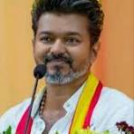
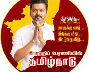

The most recent major election in Tamil Nadu was the 2021 Tamil Nadu Legislative Assembly election. In this election, the Dravida Munnetra Kazhagam (DMK) alliance achieved a major victory and formed the government after defeating the All India Anna Dravida Munnetra Kazhagam (AIADMK) alliance. The results were announced on May 2, 2021.
The DMK won 133 seats on its own in the 234-member Assembly, while its alliance secured a total of 159 seats, which was well above the majority mark of 118 seats. The AIADMK won 66 seats and became the main opposition party. Other parties such as the Indian National Congress, Bharatiya Janata Party (BJP), PMK, CPI, and CPI(M) also won a few seats.
After the victory, M. K. Stalin became the Chief Minister of Tamil Nadu for the first time. The election marked the return of the DMK to power after ten years of AIADMK rule from 2011 to 2021. The election also showed high voter participation, with around 73% voter turnout across the state.
The results reflected important issues such as development, employment, welfare schemes, education, healthcare, and public opinion about the previous government. Tamil Nadu elections are considered highly competitive because the people actively participate in the democratic process and carefully choose their leaders.
The election process was conducted by the Election Commission of India using Electronic Voting Machines (EVMs). The results demonstrated the strength of democracy in Tamil Nadu and the importance of public voting in shaping the government of the state.

Vijay, the popular Tamil actor, has been actively involved in social and political issues in Tamil Nadu. He has a large fan base and is known for his philanthropic activities. Vijay has expressed his views on various political matters and has supported certain political parties and leaders in the state. His influence on the youth and his involvement in social causes have made him an important figure in Tamil Nadu politics. Many people look up to him for his contributions to society and his stance on important issues affecting the state.
And finally, the election results in Tamil Nadu reflect the democratic process and the active participation of the people in choosing their leaders.
And chief Minister of Tamil Nadu is C.Joseph Vijay now
